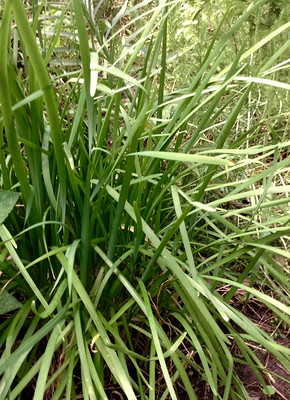
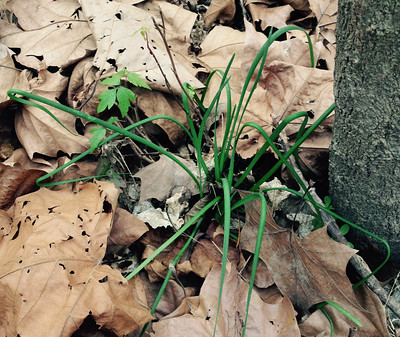
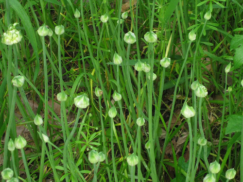
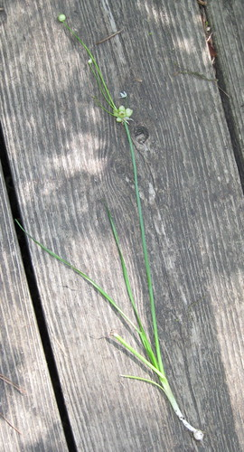
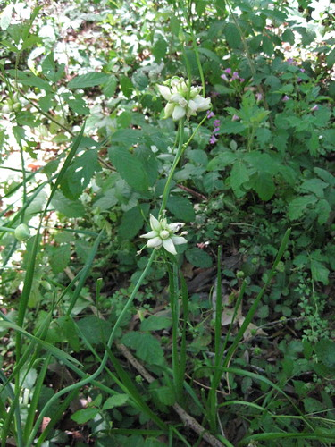
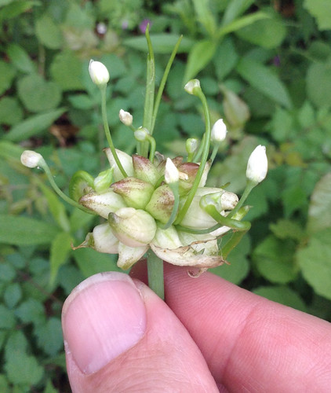
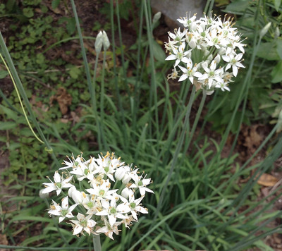
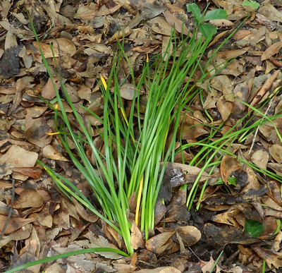
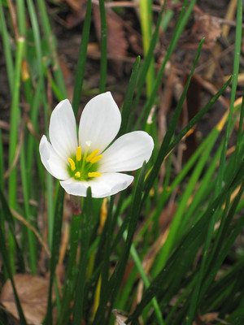
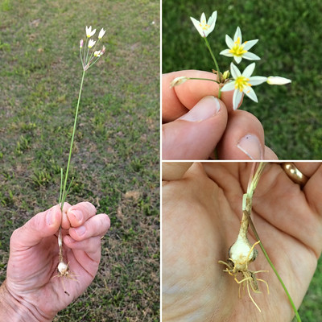

Onion - Wild
Scientific name: Allium species
Abundance: plentiful
What: bulbs and young stems/leaves
How: raw or cooked as seasoning
Where: open, sunny areas
When: all year, more common in cool weather.
Nutritional Values: Vitamin C plus small amounts of other vitamins, minerals, some carbohydrates.
Other Uses: juice acts as a weak insect repellent
Dangers: Rain lilies (Zephyranthes stellaris) look identical to wild onions and can be fatal. Crows Poison (Nothoscordum bivalve) plants also look just like wild onion and may cause upset stomaches. Only wild onion smells like onion. If it smells like onion it is safe to eat, if it just smells like grass it's Rain Lily or Crow's Poison.
A thick stand of wild onions. These are 12"-14" tall.

A few wild onions...with some poison ivy.

A bunch of invasive Field Garlic (Allium vineale) onions close to flowering.

A single wild onion plant.

Wild onion flowers and seeds.

Close-up of Wild Onion flowers and seeds.

Another type of wild onions flowering.

Wild onions form large beds of plants which drive out other plants. They are most common in cooler weather. The whole plant can be used same as chives, from the bulb to the tips of the green stems.
Larger wild onion stems can become too tough to eat unless they are boiled or stewed for a long time, but they tough ones can be easily determined when harvesting. If they are tough to cut/break then they'll be tough during eating unless cooked a long time.
The white flowers that they produce can also be eaten and give an interesting appearance to foods when the flowers are left raw. The flowers eventually turn into fairly hard, nut-like seeds that can also be eaten raw or cooked into dishes.
Wild onions can be dried for later use but be warned, if you dry them in a dehydrator your whole house will smell like onions for days.
There is a minimally toxic mimic of wild onion, which is called Crow's Poison (Nothoscordum bivalve). This plant look almost identical to a small wild onion but it lacks the onion/garlic smell when. Crushed Crow's Poison smell like grass whereas the wild onion smells like onion when crushed. The toxins in Crow's Poison are very weak and in a very low amount. You would have to eat a pound of the plant just to get a bad stomach. When dug up, Crow's Poison will have a cluster of attached bulbs underground.
Rain Lily (HIGHLY POISONOUS)

Rain Lily flowers (HIGHLY POISONOUS)


Crow's Poison (MILDLY POISONOUS)

Close-up of Crow's Poison flower (SLIGHTLY TOXIC).
{kind=link}
Crow's Poison gets its name from the practice of mixing the mashed-up bulbs of this plant with a handful of grain which was then left out for crows to eat. The crows would get sick, some would die, and the other crows would realize they need to leave the grain of this farm alone.